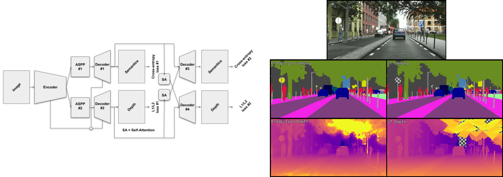
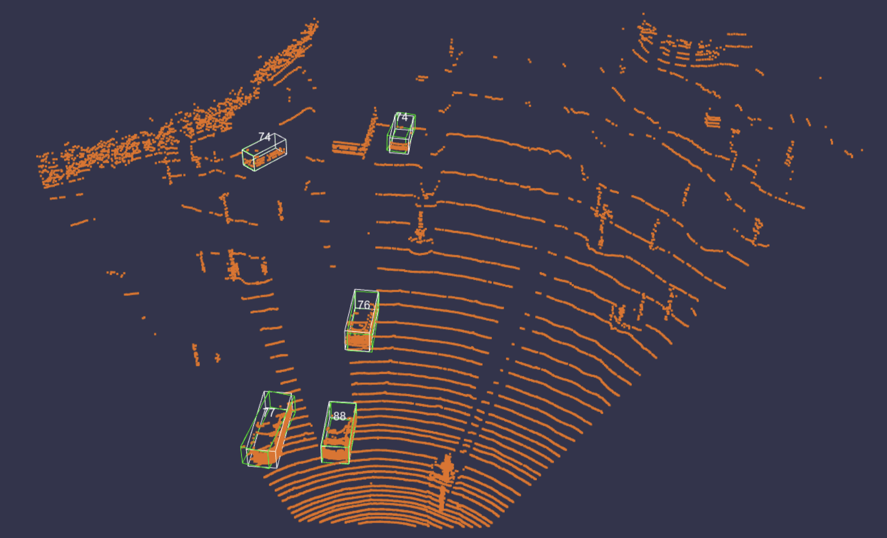

Introduction
The objective of these projects is to use modern automotive sensors and HD navigational maps, and to implement, train and debug deep neural networks in order to gain a deep understanding of cutting-edge research in autonomous driving tasks, including perception, localization and control. Detailed topics covered in the projects are following:
Project 1: Understanding multimodal driving data; Project 2: Multi-task learning for semantics segmentation and depth estimation; Project 3: 3D Object detection from lidar point clouds.
Project 1: Understanding Multimodal Driving Data
The goal of the first project is to visualize the outputs of common autonomous driving tasks such as 3D object detection and point cloud semantic segmentation given a LiDAR point cloud, the corresponding RGB camera image, the ground truth semantic labels and the network bounding box predictions.
Additional tasks were about identifying each laser ID directly from the point cloud, and dealing with the point cloud distortion caused by the vehicle motion with the aid of GPS/IMU data.
Further info: Handout, Report.

Project 2: Multi-task Learning for Semantics Segmentation and Depth Estimation
The goal of the second project is to build Multi-Task Learning (MTL) architectures for semantic segmentation and monocular depth estimation tasks, exploiting joint architectures, branched architectures, and task distillation.
Further info: Handout, Report.

Project 3: 3D Object Detection from Lidar Point Clouds
The goal of the third project is to build a 2-stage 3D object detector to detect vehicles in autonomous driving scenes. The first stage, which is often referred to as the Region Proposal Network (RPN), is used to create coarse detection results from the irregular point cloud data. These initial detections are later refined in the second stage network to generate the final predictions.
Further info: Handout, Report.
